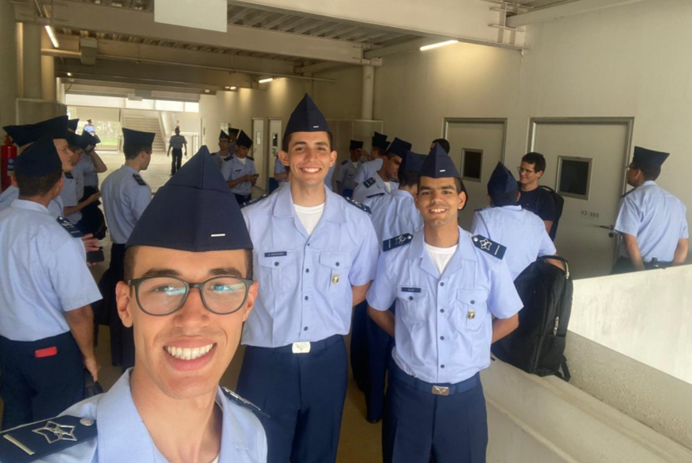
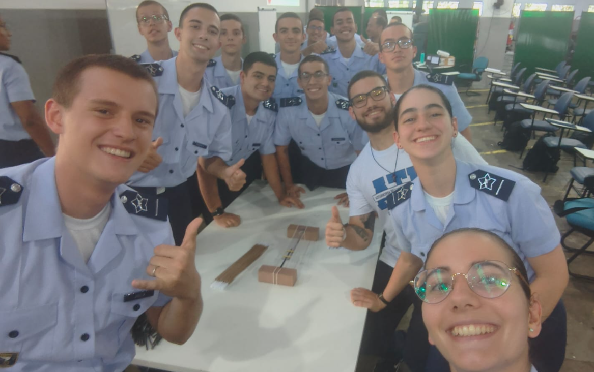
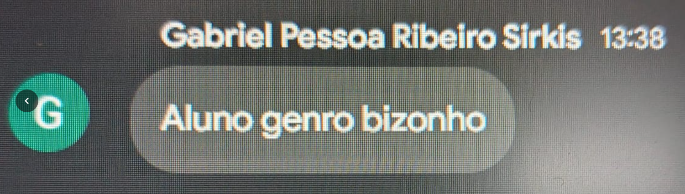
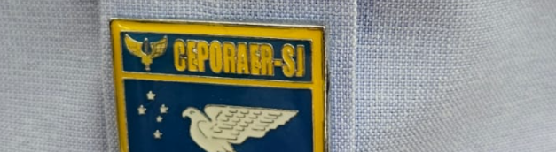
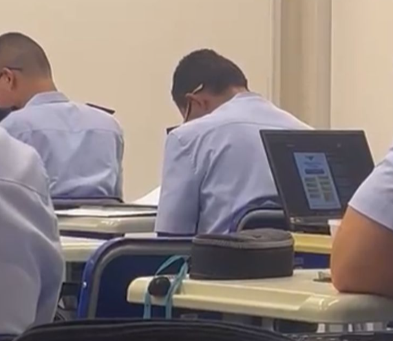
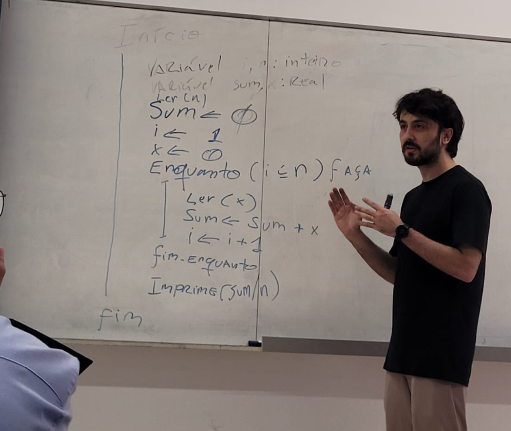
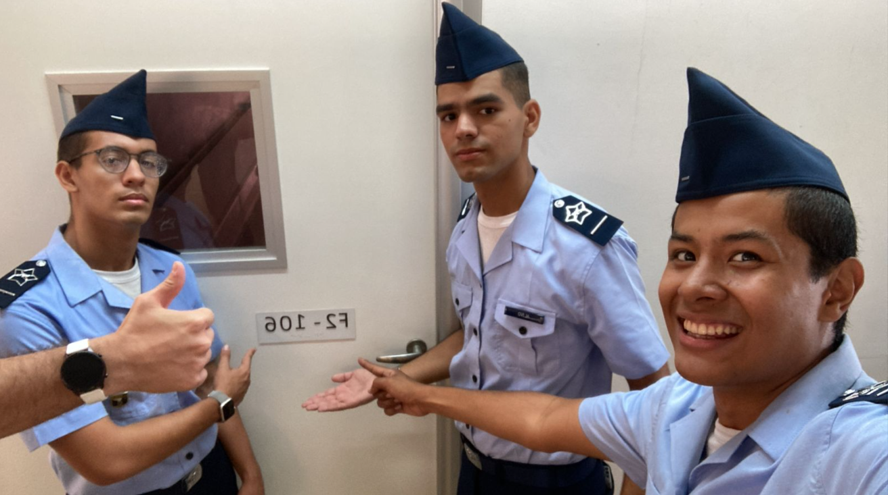
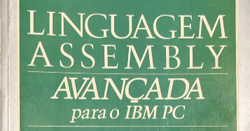

Conheça a Subturma T2
Fotos, informações e discussões sobre a T2.
Argumentação escolástica de Lefebvre ("Nada Genérico") sobre o nível de sugação da T2. Extraído do grupo da turma.
Texto original preservado na íntegra:
O primeiro discute-se assim. - Parece que a T2 não é a mais sugada.
1 - Pois, Alvin da T3 diz: "Ah, mas vocês não têm Cassiano, que
passa 1 hora do tempo de aula, não têm a Bete Carniceira, cujo
nome já a explica, logo podem coçar à vontade"
2 - Demais. - A T2 tem o Valério, e o Valério (aka. Vôlério) é
coçado. Ora, uma turma que tem um professor coçado é coçada. Logo,
a T2 é coçada. Ademais, a T1 também tem o Valério, mas estava
atrasada na matéria na P1 em relação à T2, tendo que estudar mais
para tirar a mesma nota. Ora, a turma que tem que estudar mais
para tirar a mesma nota é mais sugada que uma que tem que estudar
menos. Logo, ao menos a T1 é mais sugada que a T2.
3 - Demais. - Só a T2 tem aula com a Nilda, e a Nilda oferece
coçação pura. Ora, a turma mais sugada não pode ter coçação pura
em nenhuma das matérias. Logo, a T2 não é a mais sugada.
Mas, em contrário, diz Urubu da T2: "Sugou."
SOLUÇÃO. Respondo dizendo que se deve distinguir a coçação objetiva da subjetiva. Ora, objetivo é aquilo que se refere ao objeto, e subjetivo, ao sujeito que padece determinada coisa. Pois bem, a sugação tem como caráter principal a afetação do indivíduo sugado, e não o ambiente e os fatores que causam a sugação, de onde se conclui que é possível uma turma ser mais sugada mesmo que os professores sejam menos sugões e as condições externas mais tranquilas, contanto que tal turma sofra mais em relação à sua sugação objetiva, mesmo que esta seja menor que a das outras turmas. Ora, é conhecimento comum que a T3 detém a maior sugação objetiva. Porém, como é demonstrável que a T2 é portadora da maior sugação subjetiva e a sugação é, de sua natureza, subjetiva, conclui-se que a T2 é a mais sugada simpliciter, enquanto a T3 o é somente secundum quid, o que se prova desse jeito: À T2, foi prometida tanta coçação quanto à T4, o que gera uma grande esperança de coçar por um lado, e uma tremenda tristeza por ver tal expectativa quebrada por outro. Ora, nesse primeiro bimestre, tal expectativa foi gravemente quebrada, dado à pouca melação de aulas e de trabalhos e a outros fatores como CES-10. Portanto, a T2 está se afogando em um vazio indescritível. Ademais, não cessa à T2 a esperança de coçar, dada a grande ênfase com que lhe foi prometida a coçação. Portanto, não só sofre com o presente, mas com uma esperança nunca alcançada, sendo afetada principalmente em seu interior. Por outro lado, a T3 já tinha sido alertada de sua sugação, então não sofre nem com uma expectativa quebrada, nem com uma esperança futura, padecendo mais de fatores externos e objetivos do que internos e subjetivos, isto é, secundum àqueles, e não estes, que constituem essencialmente a sugação. Portanto, a T2 é mais sugada internamente, isto é, simpliciter, enquanto a T3 o é tão somente secundum quid, de onde se conclui que a T2 é a mais sugada.
DONDE A RESPOSTA ÀS OBJEÇÕES é evidente, e como eu sou da T2, sugou explicitá-las.
Fonte: Lefebvre ("Nada Genérico"), aluno da T2.
Fotos
Conheça um pouco mais sobre a nossa querida turma.







